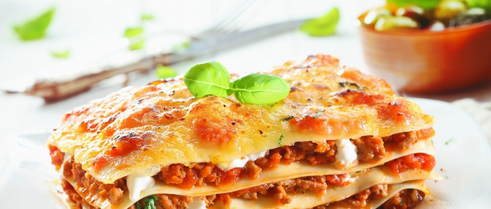

Lasagne

It takes a little work, but it is worth it.
Lasagne plates
Tomato sauce
Cheese
Ground Beef
Cook beef until done
Stack everything
Put in oven until done
Let sit until tomorrow then it is much better for lunch